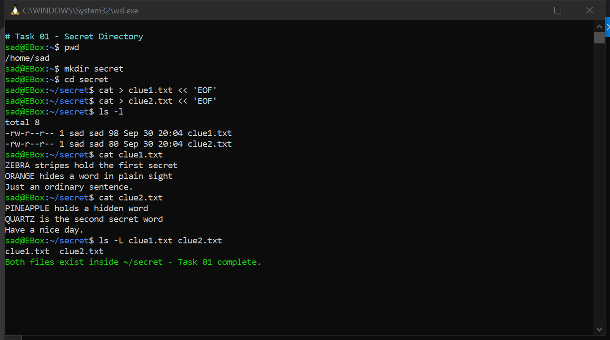
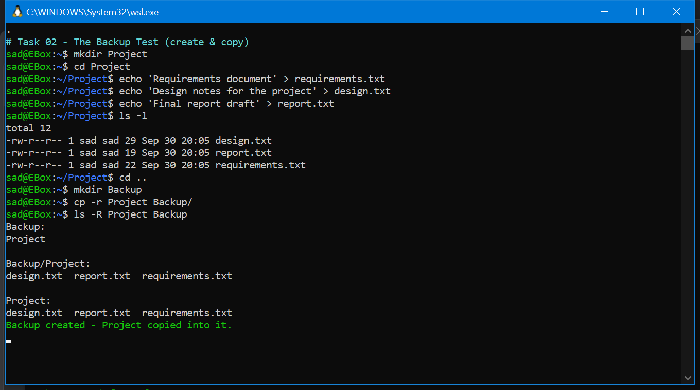
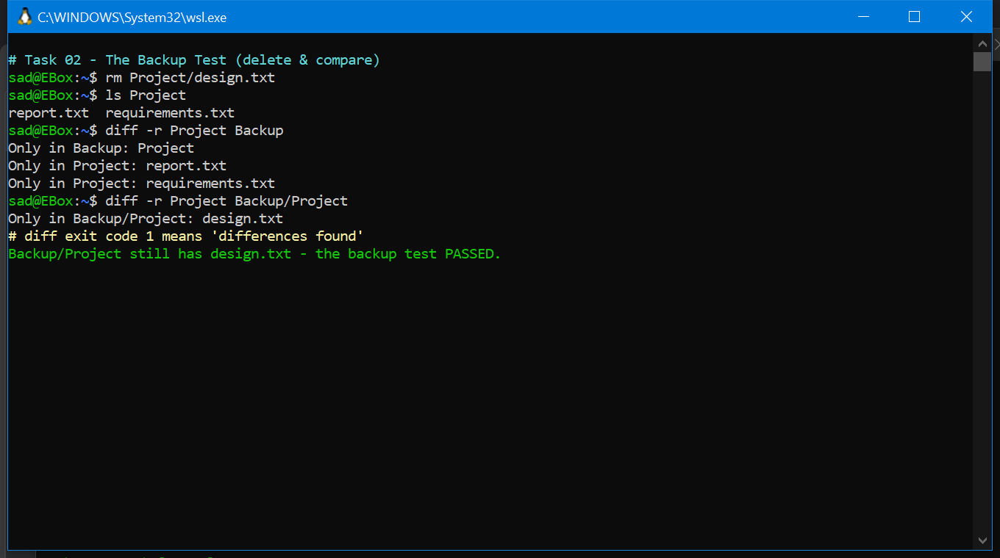

Windows file types & CMD mastery · Virtualization, VMware & Kali Linux
Drop the Week 1 lab material into your _inbox and run "process inbox" — the note will appear here automatically once generated.
meanwhile, revise Week 1 of CS111 →
| Extension | Type | Security note |
|---|---|---|
.exe | Executable | Runs code — never open untrusted executables |
.bat / .cmd | Batch script | Can automate malicious commands |
.dll | Library | Loaded by programs — tamper target |
.txt | Plain text | Generally safe, no code execution |
.docx / .xlsx | Office docs | May hide macros / exploit payloads |
.pdf | Can embed scripts or exploit code | |
.zip / .rar | Archive | May hide malicious files inside |
.log | Log file | Goldmine for forensic investigation |
dir and dir /a?
/a also displays hidden and system files that plain dir hides.| Command | Purpose | Example |
|---|---|---|
cd | Change directory | cd Desktop, cd .., cd \ |
dir | List directory contents | dir, dir /a (incl. hidden/system) |
mkdir / md | Create folder | mkdir PracticeFolder |
rmdir / rd | Remove empty folder | rmdir TestFolder |
type | Show file contents | type notes.txt |
copy | Copy a file | copy notes.txt Backup\ |
move | Move a file | move test.txt Documents\ |
ren / rename | Rename a file | ren old.txt new.txt |
del / erase | Delete a file | del delete_me.txt |
attrib | File attributes | attrib +h file.txt (hide), -h (unhide) |
cls | Clear screen | cls |
| Command | Purpose | Key flags |
|---|---|---|
ipconfig /all | Full network config (IPv4, subnet, gateway, DNS, MAC) | /all |
ping | Test connectivity (ICMP echo) | ping google.com |
tracert | Trace route — list hops to destination | tracert google.com |
netstat -ano | Connections + owning PIDs | -a -n -o |
tasklist | List running processes | — |
taskkill | Kill a process | /IM notepad.exe /F |
whoami | Current user (+ privileges) | /priv |
net user | List local user accounts | — |
systeminfo | OS, version, system type, RAM | — |
cipher | EFS encryption status of files/folders | — |
fc | Compare two files | fc file1.txt file2.txt |
cipher, don't
taskkill unfamiliar processes, and never del a file you haven't inspected
with type first.cd navigation → Desktop, Documents, CyberLab; bare cd shows current pathdir then dir /a — note the extra hidden/system filesmkdir PracticeFolder → confirm with dirrmdir TestFolder → confirm removalnotes.txt, display with typecopy notes.txt into Backup folder → verifymove a test file into Documents → verifyren oldname.txt newname.txt → verifydel delete_me.txt → confirm it's goneattrib +h hidden.txt → check with dir & dir /a → unhide with -hcls — screen clearsipconfig /all → record IPv4, subnet mask, default gatewayping google.com and microsoft.com → record replies & mstracert google.com → count visible hopsnetstat -ano → find a LISTENING entry, record local address + PIDtasklist → 3 familiar processes; open Notepad, find notepad.exe, kill your own with taskkill /IM notepad.exe /Fwhoami + whoami /priv → record one privilegenet user → list accounts (create/delete nothing)systeminfo → OS Name, Version, System Type, Total Physical Memorycipher → observe encryption statusfc → record the differencedir — but the file "vanished"secret.txt exists on the desktop, but your dir shows nothing.dir /a — if it appears, the file is only hidden (attribute), not deleted.attrib secret.txt shows A H — the H bit explains it.attrib -h secret.txt → normal dir sees it again.attrib +h is cosmetic hiding, not security — dir /a sees straight through it. Attackers use this trick, so defenders must know it.netstat -ano finds the PID → tasklist maps PID → name → taskkill ends it.
"Find it, name it, kill it."+r/-r read-only.
Plus puts on, minus takes off.attrib +h only hides from plain dir. Forensically, always check with /a.
Every network troubleshooting session starts with ipconfig /all — memorize the layout.
netstat -ano gives a PID → tasklist maps PID to process → taskkill ends it. Chain these three.
A LISTENING entry means a service waits for incoming connections — know its address and PID for viva.
cd/dir/copy/del = built into CMD (internal). ipconfig/ping/tasklist = separate programs (external). Common viva split.
Every command you learn is also a forensic tool — what an attacker hides, attrib and dir /a reveal.
What does attrib +h do?
Sets the hidden attribute — the file disappears from normal dir but still shows with dir /a. Unhide with -h.
What does LISTENING mean in netstat?
↻ tapA port is open and waiting for incoming connections; the PID identifies which process owns it.
Purpose of tracert?
Shows every router (hop) between your computer and the destination, with response times.
What is fc used for?
File compare — displays the differing lines between two files. Great for spotting tampering.
How do you kill Notepad by image name?
↻ taptaskkill /IM notepad.exe /F — /IM = image name, /F = force.
Internal vs external CMD commands?
↻ tapInternal are built into cmd.exe (cd, dir, copy, del). External are separate executables (ipconfig, ping, tasklist, systeminfo).
| Term | Meaning |
|---|---|
| Virtual machine (VM) | A software-based computer with its own OS |
| Host / Guest | Host = your physical PC + OS · Guest = the OS inside the VM |
| Hypervisor | Software that manages VMs — VMware Workstation is a Type 2 (runs on top of an OS) |
| ISO file | Disk image containing the OS installation files |
| Snapshot | Restore point for a VM — not a substitute for a real backup |
certutil -hashfile "file.iso" SHA256.Windows_YourRegIDKali_YourRegID → 50 GB → Graphical install → Guided, one partition/dev/sda → disconnect ISO → reboot → loginhostname whoami pwd ip -4 addr (not 127.0.0.1) + sudo apt update| Windows 11 guest | Kali Linux guest | |
|---|---|---|
| Desktop | Full graphical desktop + Start menu | Lightweight Xfce desktop |
| Software | .exe/.msi, closed source, licensing | .deb + apt, open source, security tools preinstalled |
| Disk | NTFS → C: | ext4 → mounted under / |
| Network check | ipconfig | ip -4 addr |
| Template | Microsoft Windows → Windows 11 x64 | Linux → Debian 64-bit |
/dev/sda), not a single partition.Marks: host/VMware 1 · Windows 3 · Kali 3 · snapshots 1 · viva 2. Screenshots are 7 of the 10 marks — capture as you go.
Submission says it explicitly. Reference "password set" — never show it.
Windows setup restarts once — press a key only the first time or the installer loops forever.
8 GB hosts can't run both guests — that's allowed ("you may run the VMs one at a time").
The ISO is just the installation image (like an installer disc) — the installed system lives on the virtual disk.
Right after Windows desktop appears: VM → Install VMware Tools — better graphics, screen capture, drag-drop.
Host OS vs Guest OS?
↻ tapHost = the physical computer's own OS (your Windows). Guest = the OS installed inside a virtual machine.
What type of hypervisor is VMware Workstation?
↻ tapType 2 — it runs on top of an existing host OS, like a normal application.
What is a snapshot — and what ISN'T it?
↻ tapA restore point for VM state; it is not a backup (it lives with the VM and can't replace off-VM copies).
Why does NAT networking matter here?
↻ tapGuests reach the internet through the host's IP — private, isolated, no extra public addresses.
What is GRUB and where is it installed?
↻ tapThe Linux bootloader, installed to the main virtual disk (/dev/sda) so the VM can start Kali.
Does shutting down a VM delete its OS/files?
↻ tapNo — the virtual disk persists; shutdown only powers the machine off, exactly like physical hardware.
Related theory: CY104 Week 5 (OS Security) →
Marks: 10 · Time: 60 min — basic Linux commands, file & directory management,
process commands, and diff -r directory comparison on Kali Linux through WSL.
wsl --install --distribution kali-linuxpwd (prints /home/yourname)| Command | Purpose | Example |
|---|---|---|
sudo | Run as administrator | sudo apt update |
pwd | Print working directory | pwd |
cd | Change directory | cd Lab · cd .. · cd - |
ls | List files | ls · ls -a · ls -lh |
mkdir | Create a directory | mkdir LabPractice |
touch | Create an empty file | touch notes.txt |
cat | Create / display content | cat > f.txt · cat f.txt |
cp | Copy files/dirs | cp a.txt a_backup.txt |
mv | Move / rename | mv old.txt new.txt |
grep | Search text in a file | grep "first" f.txt |
rmdir | Remove an empty dir | rmdir EmptyFolder |
rm | Remove files/dirs | rm f.txt · rm -r folder/ |
ps | Show running processes | ps ux |
kill | Stop a process by PID | kill 12345 · kill -9 12345 |
clear / reset | Clear / reinit the terminal | clear |
ls -a hidden files · ls -lh human-readable sizes ·
rm -r recursive delete · cd - jump to previous dir · kill -9 force kill.mkdir secret → cd secret (directory in your home)cat > clue1.txt → type 3 lines: two with ALL CAPS hidden words + one normal sentence → Ctrl+Dclue2.txtls -l (both files) → cat each file
Real Kali-on-WSL terminal — both clue files created, listed and displayedmkdir Project → create 3 files with any content (echo '...' > file)mkdir Backup → cp -r Project Backup/ (-r copies the whole folder)ls -R Project Backup
Project (design/report/requirements) copied into Backup/ — both trees identicalrm Project/design.txt (destroy one original)diff -r Project Backup/Project → reports Only in Backup/Project: design.txt
diff -r proves the backup kept design.txt after the original was deleteddiff -r Project Backup — recursively compares directories.
Exit code 0 = identical · 1 = differences found · 2 = error.cd = go somewhere · ls = look around.
Moving vs glancing.rm -r before copying!rm -r eats everything.kill <PID> tears up that card.
kill -9 = "no negotiation".Task 01 + Task 02 shots must clearly show commands and outputs. Capture as you go.
Submission explicitly says it — reference "password set", never show the prompt text.
cat > file << 'EOF' lets you type multiple lines, then EOF saves — perfect for clue files.
diff -r A B also prints Only in B: A when comparing a folder to its copy's parent — normal, use B/A for a clean read.
ls -l then cat each file — two commands, two proofs in one shot.
user@EBox:~$ style prompt proves you're really in Linux (WSL), not PowerShell.
What does pwd do?
Prints the current working directory — the full path of where you are (e.g. /home/sad/secret).
cd vs ls?
cd changes your location; ls lists the contents of where you already are.
mkdir vs touch?
mkdir creates a directory (folder); touch creates an empty file (or updates a timestamp).
cp vs mv?
cp makes a duplicate — original stays. mv relocates/renames — original path is gone.
rm vs rmdir?
rmdir deletes only an empty directory; rm deletes files, and rm -r deletes directories with everything inside.
What is grep used for?
Searches for a text/pattern inside files (or piped input) and prints matching lines.
What info does ps show?
Running processes: PID, user, CPU/memory use, and the command that started each one (ps ux).
What is a PID, and kill's role?
PID = Process ID (unique number of a running process). kill PID sends a termination signal; kill -9 forces it.
What does cat do?
Displays file content (cat file); with redirection (cat > file) it creates/writes content — used for the clue files.
Why diff -r in the Backup Test?
Recursively compares Project with Backup and reports missing/extra files — proving the backup still has design.txt after the original was deleted.
Related theory: CY104 Week 3 (Linux / command line) → · Lab 03 →